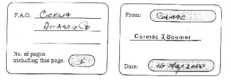

Fax from Cormac Boomer to Cecilia Pellegrini new evidence in Lockerbie trial

36 Riverdale Park North, Belfast BT11 9DL
Phone fax 280 90202624
M E S S A G E
As yet we have not had any further contact with AB. This appeared in a London Tabloid yesterday, we know you would be interested. Cormac. The Sun 16-05-2000.
LOCKERBIE
TRIAL ‘TO
COLLAPSE’
TRIAL ‘TO
COLLAPSE’
Witness has new evidence
SHOCK new evidence could wreck the case against the two Libyans accused of the Lockerbie bombing, it was claimed yesterday.
A prosecution witness will insist the suspects could NOT have planted the Semtex explosive.
The stunning development has forced lawyers to ask for a 12-day adjourn-ment of the trial in Holland.
And a legal expert predicted: “I think the case is ready to collapse. At this point I think the prosecution have no anticipation of a conviction."
Attached
The sensational twist in the trial. which is costing £2million a week, centres round Edwin Bollier of Swiss timing—device makers MEBO.
Bollier, who was shown pieces of the timer used in the 1988 attack on PanAm flight 103 only last September, commissioned independent scientists to investigate the bombing.
Their conclusion, based on the way blast damage was caused to the air-craft, was that the bomb was attached directly to its cargo hold.
The prosecution case is that it was loaded aboard the jet hidden in a cassette
A prosecution witness will insist the suspects could NOT have planted the Semtex explosive.
The stunning development has forced lawyers to ask for a 12-day adjourn-ment of the trial in Holland.
And a legal expert predicted: “I think the case is ready to collapse. At this point I think the prosecution have no anticipation of a conviction."
Attached
The sensational twist in the trial. which is costing £2million a week, centres round Edwin Bollier of Swiss timing—device makers MEBO.
Bollier, who was shown pieces of the timer used in the 1988 attack on PanAm flight 103 only last September, commissioned independent scientists to investigate the bombing.
Their conclusion, based on the way blast damage was caused to the air-craft, was that the bomb was attached directly to its cargo hold.
The prosecution case is that it was loaded aboard the jet hidden in a cassette
player inside a suitcase. Its detonation blew the 747 to pieces over the Scottish town. killing 270.
Bollier, who initially told Scots police and America’s FBI that the timer had been made by his firm, is now adamant that it was not.
A Crown Office source said: “The last thing the prosecution wants to do is call Bollier. But they know that if they don't, the defence will. It's a Catch-22 for them.
“The prosecution needs to establish a link between the Libyans and the timer, so they have to call him. But if they do, he will destroy their case.”
Leading law professor Robert Black, of Edingurgh University, added: “I have always thought this is going to be difficult case to prove.
“The prosecution will drag it out for as long as they can, because the longer the trial drags on before it collapses the more face they will saved.
“It will still be a fiendish embarrass—ment for them but they will be able to still say, ‘We did our best and pulled out all the stops’."
Libyans Abdelbaset Ali Mohmed Al Megrahi, 48, and Al Amin Khalifa Fhi-ma , 44, deny placing the bomb as well as charges of murder and conspiracy.
The trial, before three Scottish judges in a court deemed Scots territory, has been delayed until May 23.
Bollier, who initially told Scots police and America’s FBI that the timer had been made by his firm, is now adamant that it was not.
A Crown Office source said: “The last thing the prosecution wants to do is call Bollier. But they know that if they don't, the defence will. It's a Catch-22 for them.
“The prosecution needs to establish a link between the Libyans and the timer, so they have to call him. But if they do, he will destroy their case.”
Leading law professor Robert Black, of Edingurgh University, added: “I have always thought this is going to be difficult case to prove.
“The prosecution will drag it out for as long as they can, because the longer the trial drags on before it collapses the more face they will saved.
“It will still be a fiendish embarrass—ment for them but they will be able to still say, ‘We did our best and pulled out all the stops’."
Libyans Abdelbaset Ali Mohmed Al Megrahi, 48, and Al Amin Khalifa Fhi-ma , 44, deny placing the bomb as well as charges of murder and conspiracy.
The trial, before three Scottish judges in a court deemed Scots territory, has been delayed until May 23.